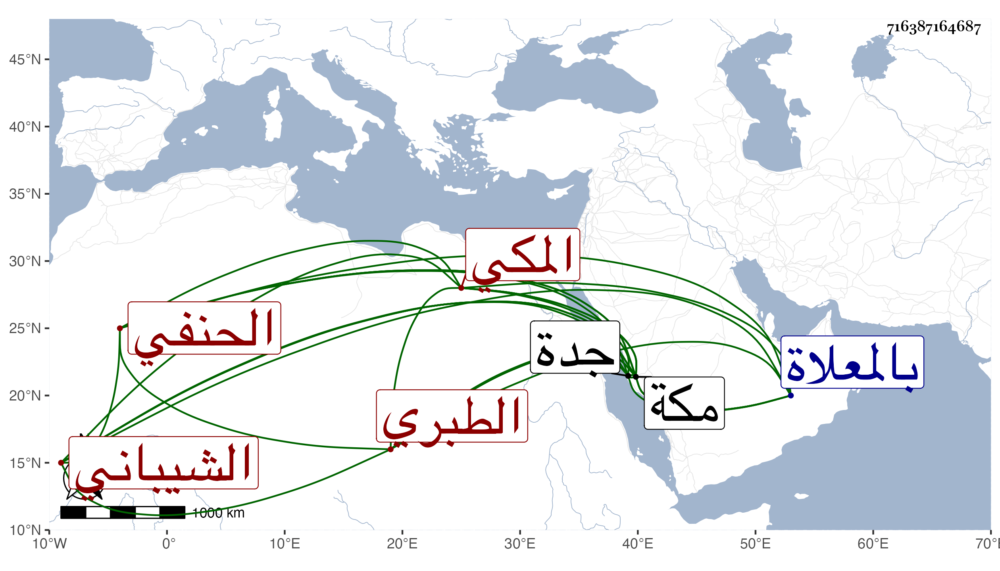

0902Sakhawi.DawLamic.ITO20230111-ara1.EIS1600.716387164687
Biography ID: 716387164687
699
علي بن جار الله بن صالح بن أبي المنصور أحمد بن عبد الكريم بن أبي المعالي يحيى بن عبد الرحمن بن علي بن الحسين بن علي بن الحسين بن محمد ابن شيبة بن إياد بن عمرو بن العلاء نور الدين بن جلال الدين الشيباني الطبري الأصل المكي الحنفي أخو أحمد الماضي وأبوهما . ولد في ذي القعدة سنة اثنتين وتسعين وسبعمائة بمكة ، ونشأ بها فحفظ القرآن وتلاه للسبع على الشمس الحلبي ، وكذا حفظ العمدة والأربعين لليافعي والشاطبيتين وعقيدة النسفي والمنار في أصول الفقه والمختار في الفقه وألفية ابن مالك ، وعرضها بمكة وبالقاهرة على جماعة ، وسمع على أبيه وابن صديق والأبناسي والزين المراغي والشريف عبد الرحمن الفاسي والجمال بن ظهيرة وأبي اليمن الطبري في آخرين وأجاز له في سنة خمس وتسعين فما بعدها عبد الله بن خليل الحرستاني وأبو بكر بن عبد الله بن عبد الهادي وأحمد بن أقبرص وفاطمة ابنة المنجا وفاطمة ابنة ابن عبد الهادي وآخرون ، وولي قضاء جدة بعد موت أخيه مدة عن قضاة مكة ثم ترك ولزم بيته لا يخرج منه إلا للجمعة والصبح والعشاء . وكان خيرا ساكنا . مات في ظهر الثلاثاء تاسع عشري شوال سنة إحدى وأربعين وصلي عليه بعد العصر عند باب الكعبة ودفن بالمعلاة رحمه الله . ذكره النجم بن فهد في معجمه .
